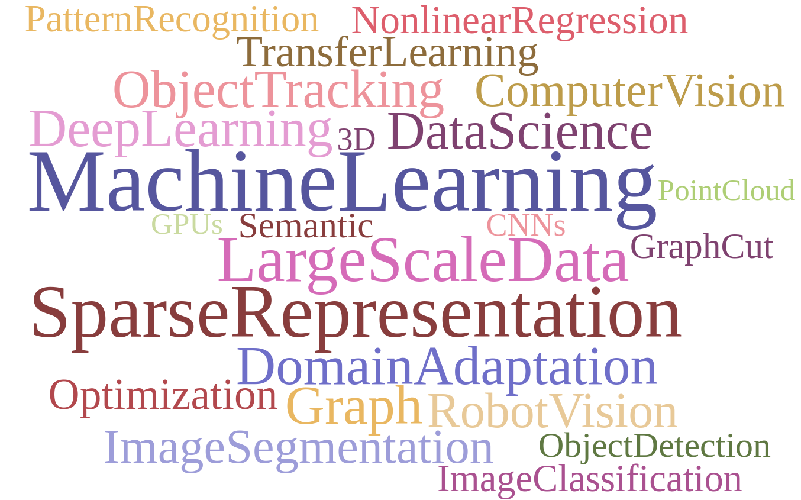

xiaofang[dot]wang[at]inria.fr
celine.chinoise[at]gmail[dot]com

Hey! I am currently R&D Engineer at Siradel on the machine learning and deep learning on satellite imagery understanding. Previously, I worked as Post-doc and R&D engineer with Prof. Julien Pettre in team Rainbow of INRIA, Rennes from 2018-2019 and with Prof. Liming Chen in LIRIS of Ecole Centrale de Lyon during 2017-2018. I was an assitant associate professor in Ecole Centrale de Lyon from 2015-2017.
Research Interest: My research interests focus on 2D/3D image/video understanding with machine learning and deep learning. I have worked on different computer vision problems such as image segmentaiton, multiple object tracking, object localication and recognition, semantic image segmentation as well as 3D object recognition based on point cloud and domain adaptation.
Education: During My PhD studies, I worked on the unsupervised image segmentation and multiple objects tracking with Prof. Simon Masnou and Prof. Liming Chen. I completed my M.E. and B.S. majored in Biomedical Engineering in School of Geosciences and Info-physics from Central South University, Changsha, China. I was working on the medical image processing, liver CT image segmentation with Prof. Yuqian Zhao
23/05, 2019: I was attending Conference JURSE. April 05, 2019: I was invited to give a seminar in the team OBELIX of IRISA/INRIA present a seminar in University of Bretagne Sud, Here is the topc [link] Mar, 2019: Our paper submitted to CVPR 2019 is accepted Feb, 2019: I will present a seminar in Ecole des Mines de Nancy Feb, 2019: A paper submitted to CVPR 2019 recieves positive feedback JAN, 2019: I am happy to anounce that I will start as a Research Engineer at the SIRADEL Rennes wtih from Jan 1st! April, 2018: I am happy to anounce that I will start as a Engineer-Postdoc at the Inria Rennes wtih RAINBOW team on April 1st! April, 2018: I have submitted a paper to IEEE International Conference on Development and Learning and on Epigenetic Robotics, 2018 Nov, 2017: Our paper on object detection submited to T-PAMI has been accepted. July. 2017 : I have submited a paper entitles "Robust Data Geometric Structure Aligned Close yet Discriminative Domain Adaptation" [link]. Jun. 1, 2017: I have submited a paper entitled "Close Yet Distinctive Domain Adaptation" [link]. Apr., 2017: Invited presentation by Prof. Thierry Artières to seminar in Ecole Centrale de Marseille, éQuipe AppRentissage et MultimediA (QARMA) . May. 27, 2016: Invited presentation in GDR_ISIS. Apr. 30, 2016: 1 paper accepted by Pattern Recognition. Jan. 1, 2015: 1 paper accepted by TIP. Dec. 8, 2014: Our paper received Top 10% paper award at ICIP 2014.
Point in, Box out: Beyond Counting Persons in Crowds.
yuting liu, Miaojing Shi, Qijun Zhao, Xiaofang Wang.
IEEE Computer Society Conference on Computer Vision and Pattern Recognition (CVPR'2019),
Link
Discriminative and geometry aware unsupervised domain adaptation.
Lingkun Luo, Liming Chen, Shiqiang Hu, Ying Lu, Xiaofang Wang
Submitted to IEEE Transactions on Cybernetics (TCYB), Link Minor revision
A Unified Framework for Interactive Image Segmentation via Fisher Rules.
Lingkun Luo, Xiaofang Wang, Shiqiang Hu, Xing Hu, Huanlong Zhang,Yaohua Liu
The Visual Computing, 2018 Link
Developmental Bayesian Optimization of Black-Box with Visual Similarity-Based Transfer Learning.
Maxime Petit, Amaury Depierre, Xiaofang Wang, Emmanuel Dellandrea, and Liming Chen.
IEEE International Conference on Development and Learning (ICDL) and the International Conference on Epigenetic Robotics (EpiRob), 2018, Tokyo.. PDF
Visual and Semantic Knowledge Transfer for Large Scale Semi-Supervised Object Detection
Yuxing Tang, Josiah Wang, Xiaofang Wang, Boyang Gao, Emmanuel Dellandrea,and Liming Chen.
IEEE transactions on pattern analysis and machine intelligence (T-PAMI), 2018, vol. 40, no 12, p. 3045-3058. Link
Interactive image segmentation based on samples reconstruction and FLDA.
Lingkun Luo, Xiaofang Wang, Shiqiang Hu, Xin Hu, Liming Chen
Journal of Visual Communication and Image Representation 43 (2017): 138-151.
Link
Robust Data Geometric Structure Aligned Close yet Discriminative Domain Adaptation [link]
Lingkun Luo, Xiaofang Wang, Shiqiang Hu, Liming Chen
Sumitted, Under revision
Close Yet Distinctive Domain Adaptation
Lingkun Luo, Xiaofang Wang, Shiqiang Hu, Chao Wang, Yuxing Tang, Liming Chen
Project, PDF . Submitted, Under revision
Active Colloids Segmentation and Tracking [link] [PDF]
Xiaofang Wang, Boyang Gao, Simon Masnou, Liming Chen, Isaac Theurkauff, Cécile Cottin-Bizonne, Yuqian Zhao, Frank Shih
Pattern Recognition(PR) vol.60, pp. 177-188,2016
Weakly Supervised Learning of Deformable Part-Based Models for Object Detection via Region Proposals [pdf]
Yuxing Tang, Xiaofang Wang, Emmanuel Dellandréa, Liming Chen
IEEE Transactions on Multimedia, Institute of Electrical and Electronics Engineers (TMM),vol.19(2), pp. 393-407,2016
A Global/Local Affinity Graph for Image Segmentation [link] [code]
Xiaofang Wang, Yuxing Tang, Simon Masnou, Liming Chen
IEEE Transactions on Image Processing (TIP), vol. 24(4), pp.1399-1411, 2015
Retinal vessels segmentation based on level set and region growing [PDF] Yu Qian Zhao and Xiao Hong Wang and Xiaofang Wang, and Frank Y Shih. Pattern Recognition(PR) vol.47(7), pp. 2437-2446,2014
Fusing Generic Objectness and Deformable Part-based Models for Weakly Supervised Object Detection [pdf]
Yuxing Tang, Xiaofang Wang, Emmanuel Dellandréa, Simon Masnou, Liming Chen
IEEE International Conference on Image Processing (ICIP), Paris, 2014. (Top 10%)
A graph-cut approach to image segmentation using an affinity graph based on ℓ0-sparse representation of features [pdf]
Xiaofang Wang and Huibin Li and Charles-edmond Bichot and, Simon Masnou, Liming Chen
IEEE International Conference on Image Processing (ICIP), 2013. (Top 10%)
Graph-based image segmentation using weighted color patch [pdf]
Xiaofang Wang and Chao Zhu and Charles-edmond Bichot and, Simon Masnou
IEEE International Conference on Image Processing (ICIP), 2013.
Sparse Coding and Mid-Level Superpixel-Feature for ℓ0-Graph Based Unsupervised Image Segmentation[PDF]
Xiaofang Wang, Huibin Li, Simon Masnou, Liming Chen
Computer Analysis of Images and Patterns. Springer Berlin Heidelberg (CAIP), 2013.
An improved non-local cost aggregation method for stereo matching based on color and boundary cue [PDF]
Dongming Chen, Mohsen Ardabilian, Xiaofang Wang, Liming Chen
IEEE International Conference on Multimedia and Expo (ICME), 2013.
Level-set Mehod Based On Global and Local Regions For Image Segmentation [PDF]
Yuqian Zhao, Xiaofang Wang, Frank Y.Shih, Gang Yu
International Journal of Pattern Recognition and Artificial Intelligence, vol. 26(01), 2013.
INF-TC1: Introduction to algorithms (1st year Ecole Centrale de Lyon, TD/TP, 84h), Fall 2015 and Spring 2016.
INF-TC2: Object-oriented programming (1st year Ecole Centrale de Lyon, TD/TP, 63h), Fall 2015 and Spring 2016.
INF-TC3: Web and Database Project (1st year Ecole Centrale de Lyon, TD/TP, 32h), Fall 2015 and Spring 2016.
IEEE Transactions on Image Processing [LINK]
IEEE Transactions on Knowledge and Data Engineering [LINK]
Pattern Recognition
ACM 2019
French learning notes [LINK]